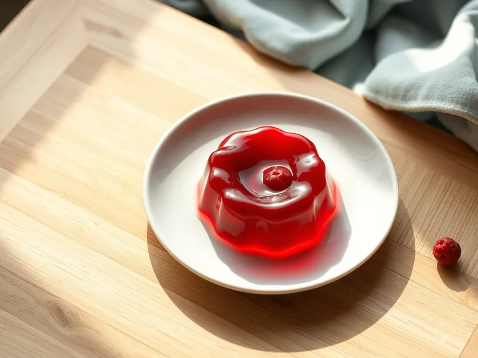

Ягодное желе с желатином
Прозрачное желе из свежих или замороженных ягод
250 мин4 порц.212 ккал на порциюБ 5 · Ж 0 · У 46Русская кухня
Открыть в приложении: порции, таймеры, список покупок
Продукты на 4 порц.
- Ягоды (свежие или замороженные)400 г
- Сахар150 г
- Вода3 стак.
- Желатин1,5 ст. л.
- Вода100 мл
Как готовить
- Залейте желатин 100 мл холодной воды и оставьте набухать на 15 минут.
- Залейте ягоды 600 мл воды, добавьте сахар и варите на среднем огне 5 минут после закипания.
- Разомните ягоды толкушкой и процедите отвар через сито, отжав мякоть.
- В горячий, но не кипящий отвар вмешайте желатин и мешайте 1-2 минуты до полного растворения.
- Разлейте по креманкам, остудите 20 минут и уберите в холодильник на 3-4 часа, пока желе не застынет.
Совет. Не кипятите отвар после добавления желатина, иначе желе не застынет.